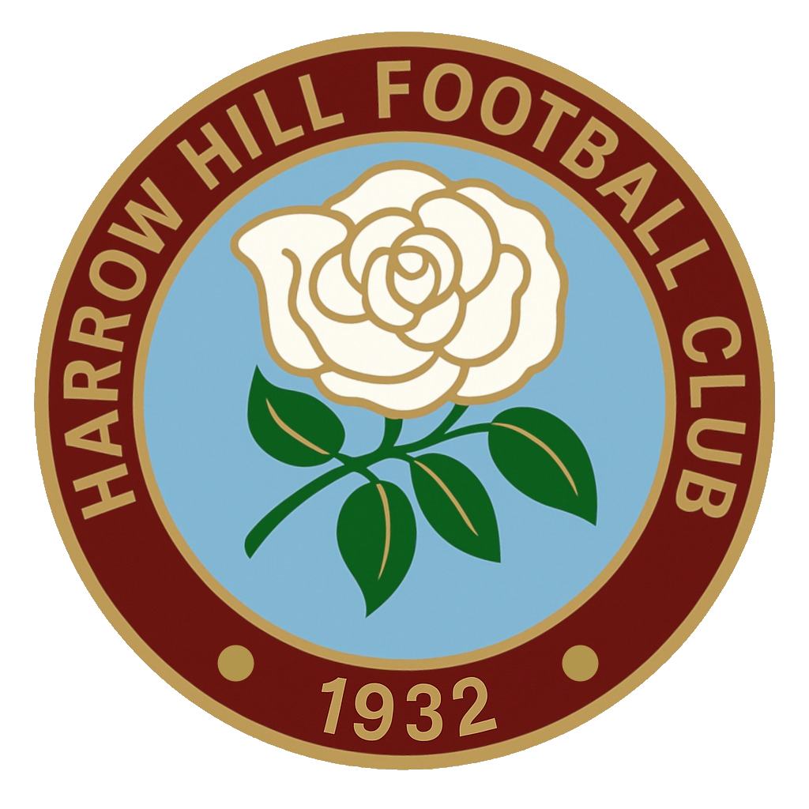

Harrow Hill AFC
Founded 1932
About
Welcome to Harrow Hill AFC! Founded in 1932 in the village of Harrow Hill, Gloucestershire, our club has a proud history in Forest of Dean and Gloucestershire football.
Our Teams
Our club is dedicated to providing a welcoming environment for players of all ages and abilities, and to being a hub for the local community, supporters, friends, and families.
- First Team: Gloucestershire Northern Senior League
- Reserve, Third & Fourth Teams: North Gloucestershire Association Football League
- U11 Youth Team: Severn Valley Youth League (formed 2025 - our return to youth football after 15 years)
- U12 Youth Team: Currently being formed to enter the Severn Valley Youth League for the 2026/27 season
A Brief History
- 1932: Club founded in Harrow Hill, Gloucestershire
- 1938-39: Cup Winners
- 1963-64, 1964/65, 1971/72: Northern Senior League Winners
- 1980-81: Gloucestershire Northern Senior League Champions
- 1981-82: Northern Senior League Winners, County Cup Runners-up, Diamond Jubilee Trophy Runners-up, Stroud Charities Runners-up
- 1982: Joined the Gloucestershire County League
- 1984-85: Quad winners
- 1994-95: Finished runner-up in the Gloucestershire County League and gained promotion to the Hellenic Football League for the first time.
- 1994-95: Started a fifth team, playing at Brierley - famously known as the "San Siro"
- 1996: Ground improvements and addition of floodlights
- 1996-97: Finished third in Division One and gained promotion to the Hellenic Football League Premier Division.
- 1996-97: Reached the final of the Division One Cup, losing to Ardley United on penalties
- 1997: Grew to 6 senior teams
- 2001-02: Relegated back to Hellenic League Division One (West)
- 2004-05: Won the GFA County Cup with a 3-1 victory over Hallen - Source
- 2005–06: Runners-up in Hellenic League Division One West, earning a return to the Hellenic Football League Premier Division
- 2009: Reluctantly withdrew from the Hellenic League due to financial challenges
- 2010-11: Finished second in Gloucestershire Northern Senior League Division Two, narrowly edged out by Frampton FC on goal difference. Earned promotion to Division One for the 2011/12 season
- 2025: Launched U11 youth team
- 2025: Fourth team up and running
Harrow Hill remains a respected name in Gloucestershire football, with a strong community spirit and a commitment to developing players for the future.
Our Teams
Click on a team to view their fixtures, results, and league table.